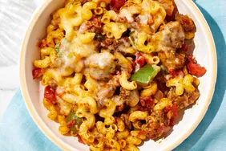

Home Lasagna
Baked Ziti
Chili Mac
Chicken Noodle Soup
CHILI MAC

One pot! Endless satisfaction.
Ingredients
- 1 tablespoon extra virgin olive oil
- 1 medium sweet onion, diced small
- 3 cloves garlic, minced
- 1 pound lean ground beef
- 2 cups low-sodium chicken broth
- 8 oz can tomato sauce
- 1 (10 ounce) can diced tomatoes with green chile peppers
- 1 teaspoon chili powder
- 1 teaspoon cumin
- salt and ground black pepper to taste
- 2 ½ cups uncooked elbow macaroni
- 1 cup shredded Cheddar cheese, plus 2 tablespoons
- ¼ cup chopped fresh parsley
Directions
- Sauté ground beef in a large, deep skillet over medium-high heat; cook and stir until browned and crumbly, 5 to 7 minutes. Add onion and cook until translucent, about 5 minutes.
- Stir in diced tomatoes, tomato sauce, 1 tablespoon fresh parsley, chili powder, cumin, salt, pepper. Reduce heat to medium-low and simmer, stirring occasionally, for 10 minutes.
- While the sauce is simmering, bring a large pot of lightly salted water to a boil. Cook macaroni in the boiling water, stirring occasionally, until tender yet firm to the bite, 8 to 10 minutes. Drain and set aside.
- While the noodles are cooking, preheat the oven to 375 degrees F (190 degrees C).
- Combine noodles and beef mixture. Mix in 1 cup cheese Pour into 8 by 10 baking dish. Cover with aluminum foil
- Bake in the preheated oven for 20-30 minutes. Remove the foil, sprinkle some reserved cheddar ontop and bake until cheese is golden brown, 5 to 10 more minutes.
- Remove from the oven and let stand for 10 minutes before cutting and serving.